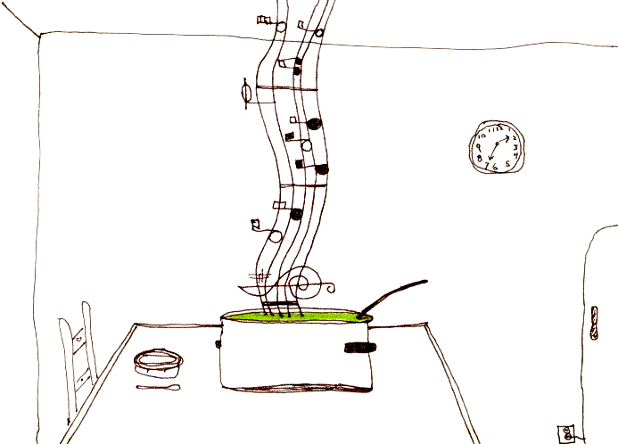

SOUPSONG HAS GONE HARDCOPY!
Buy one (or more) at amazon.com or barnesandnoble.com.
Release date: 12/28/2004.
* * *Click HERE to add a soup painting--or your own 2 cents.
Or do you want to take another look at the homepage MENU?
Or do you want to SEARCH for something specific?
Or do you want to take another look at the homepage MENU?
Or do you want to SEARCH for something specific?

Soup in Art
Soup is an odd subject in a painting. It doesn't really have form--it can't be easily identified or represented as, say, an apple can. But it still seems to serve distinct purposes in the diverse group of paintings that showcase or include it: sometimes the comfort of home--sometimes human, cultural, or spiritual values--sometimes class structure, from the broken crockery of peasants to the most exquisite Meissen tureens. And how about this very pure rendering of Soup Song by poet Clyde Sanborn? See below for details under "S."
| Artist | Painting |
|---|---|
| Max Beckmann German |
"I Don't Want to Eat My Soup" lithograph (1946), from Day and Dream series, shows a recalcitrant child in his high chair. |
| Pieter Brueghel (Peasant Bruegel), Flemish |
"The Netherlandish Proverbs" (1559). In this tour de force of some 92 visualizations of local proverbs, Brueghel shows, midpicture, Aesop's fox, duly bibbed and frustrated, waiting for soup sustenance from his "friend" the crane, who is happily sipping from a narrow earthenware vase (Hier noyt de craen de vos)--and also in the right lower corner Die syn spise stort, en cause niet al op gherapen--"he who spills gruel cannot get it all up," showing a hungry man with a big spoon trying to scoop up the spilt kettle of gruel from the ground back into the pot. |
| Pieter Brueghel (Peasant Bruegel), Flemish |
"The Death of the Virgin" (illegible date). One of the two Grisailles painted by Brueghel, an extraordinary chiaroscuro showing the Very Moment of translation, with masses of attentive mourners, a sleeping apostle, and, center stage, a left table of half eaten soup plates, lit by a candle. |
| Pieter Brueghel (Peasant Bruegel), Flemish |
"The Corn Harvest" (1565). A painting of paralyzing heat, with a nice grouping of peasants at midday under a tree partaking of the midday meal. Oh the rapture, during this break in the day, of sitting down and spooning up soupbowls full of earthenware-cooled milk with bits of bread in it. |
| Pieter Brueghel (Peasant Bruegel), Flemish |
"The Peasant Wedding" (illegible date). Too much has already been written about this wonderful painting. Let's just note the importance, center stage, of soup being carted up by servants and served, probably, by the brother of the bride, to the Head Table, while musicians play on and look a little wistful about that soup. [Okay, one dissenting voice. A recent critic says forget soup, it's rice pudding. Any informed opinions here?] |
| Pieter Brueghel (Peasant Bruegel), Flemish |
"Gluttony" (1558), in the grotesque Sin series, shows, inter alia, in the low left corner a disembodied head feeding itself with a soup spoon, a soup bowl on its head, impaled by a spoon. |
| Theodore Earl Butler, American [Protege of Claude Monet at Giverny] |
"Le Dejeuner" (1897). A little girl with touseled hair, sitting by herself in front of a fireplace, wrestles a huge soup spoon into her figured flat luncheon soup plate. |
| Jacques Callot, French printmaker [sometime artist for the Medici family] |
"Two Beggarwomen" (c. 1622). Two ragged old women--clothed in many layers, one barefoot and the other grasping a cane--are palpably tense in their concentration on their tiny repast. Standing up to eat, not a chair in sight for their tired bones, one holds tight to both sides of their small bowl of soup while her companion wields the spoon. |
| Caravaggio [Michelangelo Merisa da Caravaggio], Italian |
"Supper at Emmaus" (1600-01). Okay, this may be stretching the point, but the lusterware bowl on the right--set as it is in that incredibly generous spread of food--cries out soup to me. |
| Chagall, Marc 20th century Russian |
"The Feast of the Tabernacles" (1916). Originally commissioned as a mural for a secondary school outside (then) Petrograd, this goache painting of the Jewish harvest celebration shows 2 men in a traditional sukkah sitting at table, one eating soup with a big spoon, while a woman passes more food through a window in the side, a boy plays on the ground with a chicken, and another man carries the four species to the synagogue. |
| Jean-Siméon Chardin, French | "Saying Grace" (2 versions: c. 1740 & 1760), where a lovely woman pauses in ladling soup into large soup plates when her youngest falters over the Bénédicté and looks up for help. Older sibling can't quite help relishing the mistake. It's a pretty scene of domestic intimacy in a bourgeois setting. |
| Jean-Siméon Chardin, French | "The Butler's Table" (1756), contrasting with homely companion picture "The Kitchen Table," pictures an array of gourmet items and fine servers, including an exquisite covered soup tureen with elaborate floral decorations. |
| Jean-Siméon Chardin, French | "The Jar of Olives" (1760) may be called "The Jar of Olives," but that gorgeous creamy white and gold Meissen soup tureen next to it, spotlighted as it is, ineluctably draws the eye. Diderot adored this painting and actually wrote a lengthy homage to it. |
| Gerard David, Flemish | "Madonna and Child with the Milk Soup" (1520), shows an exquisite and exquisitely calm Mary dipping a wooden spoon into a bowl of bread-garnished milk soup to feed to her equally calm, but penetratingly interested son. It's a beautiful painting, introduced to me by Silja Harel in Israel. To view it, type in the painter and the painting's name at http://gallery.euroweb.hu/search.html. |
| Maurice Denis, French Nabi | "La Cuisiniere" (1893), shows Denis' beloved wife Marthe in the kitchen, cooking, bustling, and filling the canvas...but what's that behind her? Mary, carrying out a flat soup plate from a room well in the background, and if you look closely you'll see Christ with his disciples at table in the dining room. A really lovely and warm piece. |
| Gerrit Dou, Dutch | "The Quack" (1652), showing a vibrant street scene, probably in Dou's native Leiden, with people of all trades listening to the pitch of a charlatan doctor, while at the doctor's feet his wife wipes the very very dirty bum of her daughter perilously close to the soup kettle containing the miracle broth. |
| Raoul Dufy, French | "A Plate of Fish for the Bouillabaisse" (1906): a pencil drawing showing the mass of ingredients that goes into the traditional and heavenly Bouillabaisse. |
| Luke Fildes, English | "The Doctor" (1891)--a heroic doctor sits at a child's bed, china blue cup of broth and a spoon beside him, watching at dawn as the child's fever finally breaks. |
| Jules Flandrin, French Fauve | "Grandmother Giving Soup to Her Grandaughter" (1898): a pivotal painting that shows Flandrin returning to realism roots. |
| Edwin Forbes, American | "Lining Up for Soup" (1876), an etching based on Forbes' earlier sketch of Civil War soldiers in Falmouth, Virginia, waiting their turn for food. |
| Stanhope Alexander Forbes, English | "The Health of the Bride" (1889)--a white tureen of soup stands ready at the Inn's table. |
| Goya [Francisco José de Goya y Lucientes], Spanish |
"Two Old People Supping" (1819. Such a nice name for such a terrifying painting. This was one of Goya's "Black Paintings," or pinturas negras, painted after he was blacklisted as a Liberal and a traitor, while he was ill, and while he was self-exiled to La Quinta del Sordo, his own House of the Deaf outside Madrid. Exorcising his disappointments, demons, anger, and bitterness, he covered his dinining room walls with life size pictures of horror and despair (later removed to and preserved at the Prado). This one, over the dining room door, gives him macabre dining companions--a witch-like old woman stirring her soup with a large spoon and smiling horribly, seemingly oblivious to the skeleton man slobbering over the table on her left. |
| Jean-Baptiste Greuze, French | "Portrait of Joseph" (c. 1760), a strange portrait of an older man, deshabillé, leaning expressively into the picture, eyes staring past the painter...all the while clutching a bowl of chunky soup high on his chest. This and the following two entries executed by an artist revered by Diderot and all of France during his time in France's Age of Reason, but who subsequently is reviled as a sentimental and "decently pornographic" painter of moral homilies. |
| Jean-Baptiste Greuze, French | "L'Enfante Gâté" ("The Spoiled Child"--1765), depicting a chubby boy feeding his soup to the family dog while his mother looks on indulgently, her breasts tumbling out of her dress. |
| Jean-Baptiste Greuze, French | "La Belle-Mère" ("The Mother-in-Law"--c. 1780), a ferocious picture of a large woman with a wattled neck positively terrorizing the other women in the household over dining room table. The grandmother seeks comfort from heaven; the sister in law tries to escape; while the focal point of the picture is a bowl of soup on the table steaming like a vent from hell. It's composition is reminiscent of a classical tableau. |
| Juan Gris, Spanish | "Soup Bowl" (1916), showing a deconstructed bowl rendered in gouache. It was painted just prior to his "architectural period" and features his flirtation with dense speckling in his still lifes. |
| Edward Hopper, American | "Chop Suey" (1929), showing a delicate and brilliant empty green soup bowl on the table between two women in flapper hats sitting at table in the walk-up restaurant. |
| Jacob Jordaens, Flemish | "The Satyr and the Peasant" (17th century). Actually there are three separate and quite different paintings depicting this moral tale from Aesop. Jordaens paints shows his gorgeous Satyrs on the right side of the painting, hand extended expressively as the man raises the soup spoon to his mouth--but he otherwise enriches the paintings with quite different social dynamics. These didactic paintings have been described as a "triumph of middle class spirit incarnate in the malicious satyr, whose message is to beware of a person who alternately blows hot and cold." |
| Louis-Philippe Kamm, French (1882-1959) | "Le Repas des Paysans" (12th century). An old man and an old woman share a bowl of soup with two big spoons. |
| Georges Lallemant, French | "Georges and the Bowl of Soup" (c. 1625). A lusty picture of a be-feathered foppish French courtier eating on the run--standing up, with his left hand bringing a bowl of soup up to his mouth and a spoon in his right hand shoveling it in. He's peeking up at the artist with a laughing expression as if to say, this is a silly pose, quick take the picture and let me get on with it. Behind him are laughing attendants, in on the joke--a young woman with soup ladle raised, ready to dish out some more, and a valet egging him on. |
| Georges de La Tour, French | "Old Peasant Couple Eating" (c. 1620-22). Similar to Callot's print (supra), but a social class above, these two elderly but healthy and well groomed peasants stand next to each other holding their earthen bowls of a thick, rich bean soup. They're rapt on their meal, using shells or very short-handled spoons to ladle the good soup to their mouths. |
| Alphonse Lévy, French | "Dumplings for Passover Soup" (1906), a lithograph, one in a series, showing an Alsatian Jewess making dumplings for Passover chicken soup. She's a plump and pleasant woman, wearing a traditional white and pleated coiffe, with its long streamers coming over her shoulders, and an apron that cinches her ample waist and strains her buttons. Her hands, newly floured, are crossed in front of her, and she is smiling straight into the eyes of the artist, clearly so pleased to be making food to celebrate the holy day. |
| Johann Liss, German | "The Satyr and the Peasant" (1620), showing a tense moment as the husband, soup spoon in mid air, suddenly catches the lascivious looks being exchanged by his wife and the visting satyr. See Aesop's The Man and the Satyr for the origin of this wonderful genre painting. |
| John Seymour Lucas, English Victorian | "Flirtation" (1885), showing a periwigged man in a tavern distracted from his soup by a voluptuous serving maid, skirts tucked up, who stretches up on tiptoes to give him a generous view of her curves and flesh. |
| Gabriel Metsu, Flemish | "The Sick Child" (17th century), showing a large, worried mother bent over her listless child, who lays like a pieta figure across mom's lap. In the sparsely furnished room, only a small soup pot gleams on the extreme left of the painting, spoon thrust down, offering hope on its tiny table altar. |
| Jean-François Millet, French | "La Bouillie," or "Young Mother Preparing a Meal" (1847-49). Two pictures by the same name: the first, an oil, is an exquisite rendering of a beautiful young mother, sitting on a low stool and with a baby in her arms, reaching out to stir a pot of soup on a brazier. It has been described as Delacroix-like, with its triangular construction and 3-color balance of the yellow, glowing brazier, the mother's dark red dress and her blue shirt. The second is a drawing, probably meant to become a reproducible engraving, of the same construction but harsh in effect and pitiable. |
| Jean-François Millet, French | Again, "La Bouillie,"--but also titled "Woman Feeding Her Child" (1861). Indeed, this monumental painting shows a seated mother with a baby splayed across her lap. She is blowing on the hot broth in a spoon to cool it enough for baby to eat. The painting is charming and domestic, but critics scandalized by the Salon of 1861 in which it was introduced described it as "maniérisme en laid." |
| Berthe Morisot, French | "In the Dining Room" (1880), creates a triangle of warmth plunging down from the pointed top of a lavabo that's set over the fireplace to sweep into its orbit the back of the serving girl who is returning too the kitchen with a dish...and the table in front of the fireplace, already set with a loaf of bread and an uncovered soup tureen, ladle at the ready. |
| Edvard Munch, Norwegian | "The Wedding of the Bohemian I" (1925)--a remarkable painting of 7 men gathered around a table, all more or less ogling a beautiful young woman at its head in an extremely low cut red gown...but isn't that a huge soup tureen in the foreground, right next to the gigantic bottle of champagne, the artist's perspective being, apparently, the bridegroom at the other end of the table and slunk down so low that the table and its settings take up 2/3rds of the painting.... |
| William Nicholson, English | "The Lowestoft Bowl" (early 20th century)--garlic, tulips,a nd a luscious bowl brimming with cream soup, offcenter, on a large dark brown tray. |
| Adriaen van Ostade, Dutch | "The Blessing" (1653)--A charming etching of a peasant family saying grace before their simple meal of soup. Papa and small son hold their hats, mother and baby sit upright, the room is bare, with a dirt floor--oven to the right, stairs going up the back, and only one spoon in the soup pan to go around. Thanks to good friends Judy and Alden Irons for letting me examine this treasure of theirs up close. |
| Pablo Picasso, Spanish | "The Gourmet" (1901)--a blue period piece showing a sweet little girl on tiptoe, spooning soup into her mouth out of a big bowl on the table. |
| Pablo Picasso, Spanish | "La Soupe" (1903)--another blue period piece, powerfully depicting a mother, flatfooted, bent over with cares, almost in a trance as she carries a bowl of steaming soup in both hands, like a sacrifice--against which bulk her tiny daughter leaps, reaching to receive the soup, back leg extended back, forming a perfect and holy triangle. |
| Matias Quetglas, Spanish | "Aliaigua amb Figues" (1977), showing a traditional Minorcan soup deconstructed into its ingredients, including figs. Quetglas says about it, "I got by on this during my first years of struggle for glory." |
| David Rykaert III, Flemish | "The Satyr and the Peasants" (17th century). In this popular Flemish subject (see Jordaens, above), the satyr is less hellish than usual, giving his peasant subject a gentle even beaten down look of admonishment...but the young boy is clearly terrified. |
| Clyde Sanborn (1948-96), American | "Soup Song," drawn by a poet/artist/buddhist who died in a boating accident. When I found this by chance on the web, I thought it captured so much the spirit of my own soupsong enterprise. When I wrote his family and friends, they agreed. Many thanks to them for permission to use his drawing. Clyde's works can be seen at home.pacbell.net/cougre/clyde. |
| Theophile Schuler, French (1821-1878) | "Repas de paysans en Alsace" (19th century), showing a family of 14 digging into a single but giant bowl of soup. |
| Jan Steen, Dutch | The Dancing Couple (1663), depicting on this large canvas a huge range of loose behavior--barely counterpointed in the back left by a disapproving woman holding a bowl of soup high and away from a tipsy, leering man who is snuffing after it. |
| Wayne Thiebaud, American (San Francisco) | "Cream Soup" (1963): 8 flat soup plates, filled to the brim with soup, on a plain field except for the long shadows cast by them, suggesting the fall of evening. | Vincent Van Gogh, Dutch | Okay, a little bit tenuous, but certainly "Bowls and Bottles" (1885) features a coarse soup pot, ladled, among an assortment of bowls...and "Still Life with Clogs" enigmatically show wooden shoes pressed rather aggressively against a large and coarse covered soup tureen, also ladled (1885). By this time, Van Gogh was trappped physically, spiritually, and mentally in the environs of St. Remy and disgusted with its bean menu, would eat only soup. These paintings might well resonate on a number of different levels for this magnificent, distraught artist. |
| Edouard Vuillard, French member of the Nabis group | "Vallotton and Misia" (1899) is a highly figured and intimate interior scene, with Nabis artist Vallotton pacing in the background while Misia looms large in front at table dipping bread into a large blue-and-white porcelein soup bowl while her dog tries to jump into her lap. |
| Andy Warhol, American Andy Warhol, American Andy Warhol, American Andy Warhol, American Andy Warhol, American Andy Warhol, American Andy Warhol, American Andy Warhol, American Andy Warhol, American Andy Warhol, American Andy Warhol, American Andy Warhol, American Andy Warhol, American Andy Warhol, American Andy Warhol, American Andy Warhol, American Andy Warhol, American Andy Warhol, American Andy Warhol, American Andy Warhol, American Andy Warhol, American Andy Warhol, American Andy Warhol, American Andy Warhol, American Andy Warhol, American Andy Warhol, American Andy Warhol, American Andy Warhol, American Andy Warhol, American Andy Warhol, American Andy Warhol, American Andy Warhol, American Andy Warhol, American |
The Campbell's Soup Can series--silk screened on canvas and paper bags, painted in oil, reproduced and varied as part of Warhol's cultural vision. In Robert Hughes' words in American Visions, "Warhol's thirty-two soup cans are about... sameness (though with different labels): same brand, same size,
same paint surface, same fame as product. They mimic the condition of
mass advertising, out of which his sensibility had grown. They are much
more deadpan than the object which may have partly inspired them..." And yet consider some of the inscrutable variations:
» 32 Campbell's Soup Cans (1962 silkscreen) ...Tomato. »Campbell's Soup Can (1964 silkscreen)...Tomato again. »Campbell's Soup 1...one Tomato and one Vegetable Made With Beef Stock »Campbell's Tomato Soup (red and blue can against a red background)...of course, Tomato. »Campbells Condensed Tomato Soup (silkscreen on a shopping bag)...yellow and green colors. »100 Cans (oil on canvas)...Beef Noodle. »Cammpbells soup 1 (sketch of can with ripped off label)...Black Bean. »Cammpbells soup II (silkscreen)...New England Clam Chowder. »Campbell's soup (opened can against an orange background)...Cream of Chicken »Campbell's soup (blue and purple can against a brown background)...Tomato again »Campbell's Soup 1 and Campbell's Soup II...Hot Dog Bean and New England Clam Chowder |
| James McNeill Whistler, American | "Soupe à Trois Sous" (1859), drawn at an all night Parisian bar frequented by les misérables--then etched and printed black on Japanese paper. It's an early and rare piece, the most realistic of his realistic phase: 4 bums doze at 2 tables over wine and cups, while a soulful-eyed sharp-bearded boheme on the left stares straight over his empty soup plate at the artist. |
| Zemplényi Tvador (1864-1917), Hungarian | "A szegény Asszony Otthana" (or, "The Poor Woman's Home"): She sits alone on a stool in front of her bed, highlighted by window light and dressed in green with a velvety blue apron. There's no table. With white soup bowl in a spread hand, she looks with concentration at the soup she's about to spoon into her fragile mouth. |
{kind=link}